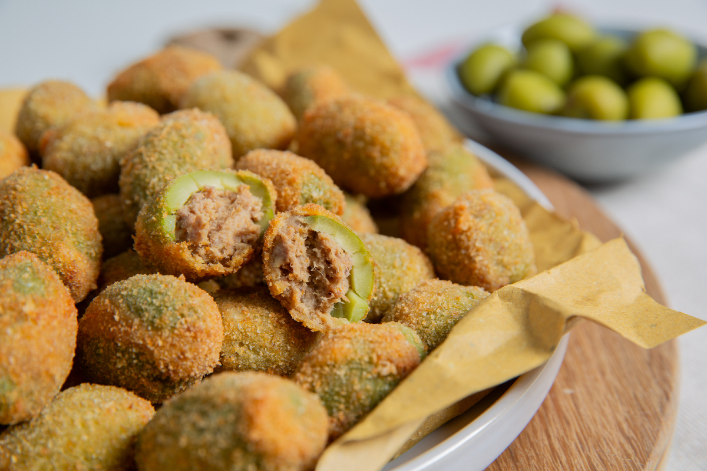

Olive Ascolane
a crunchy, savory celebration of Italian flair in every bite!

Dive into the crispy world of Olive Ascolane, Italy’s deep-fried treasure! These little green orbs are more than just olives; they’re a bite of history from Ascoli Piceno, Marche. Stuffed with a meaty mix, breaded, and fried to golden perfection, they’re the life of every Italian party, from street fairs to dinner tables. It’s said that in the 1800s, clever chefs of Ascoli nobility crafted this recipe to use up leftover meats, turning the humble olive into a culinary star
Olive Ascolane are not just food; they’re a cultural icon, symbolizing Italian ingenuity and love for life. Originating from the olive groves of Ascoli, these delights have danced their way into the hearts (and stomachs) of Italians and foodies worldwide. Whether served in paper cones at festivals or as a chic appetizer, they’re a testament to Italy’s rich gastronomic heritage and the joy of sharing good food
Ingredients:
- Green olives: 30 large ones, pitted and ready for stuffing
- Ground beef: 100g - the star of the stuffing show
- Ground pork: 100g - because two meats are better than one
- Chicken: 50g finely chopped for a poultry plot twist
- Parmesan cheese: 50g grated with enthusiasm
- Breadcrumbs: About 100g, for that perfect crispy coat
- Eggs: 2, beaten like a drum in a rock band
- White wine: A splash, for that touch of class
- Nutmeg: A pinch, for a whiff of mystery
- Flour: For dusting, like the first snow of winter
- Vegetable oil: Enough for deep frying, because we're diving deep into flavor town
Now, get ready, gather your gear, and let's get stuffing!
Step by step guide for making your taste buds sing an oliv-y opera:
- Stuffing symphony
- Mix the ground beef , pork amd chicken in a bowl as if you're conducting an orchestra
- Add parmesan, a splash of white wine, and a pinch of nutmeg for that flavor crescendo
- Cook the mixtrue until it's as brown as a Tuscan sunset
- Olive prep-arade
- Pit the olives if they aren't already, like a surgeon with a sense of humor
- Stuff those olives with the meat mixture, like filling little green treasure chests
- Breading brigade
- Roll the stuffed olives in flour, like a dusting of winter in Rome
- Dip them in the beaten eggs, then in breadcrumbs, like dressing them up for a carnival
- Fry fest
- Heat the vegetable oil in a deep pan until it's hot enough to sizzle a song
- Fry the olives until they're golden and crispy, like little suns in a Tuscan sky
- Serving spectacle
- Drain the olives on paper towels, like resting stars after a performance
- Serve hot, garnished with a sprinkle of salt and a round of applause from your adoring fans
And there you have it! - Olive ascolante that'll have you saying "delizioso!" with every crunchy bite!